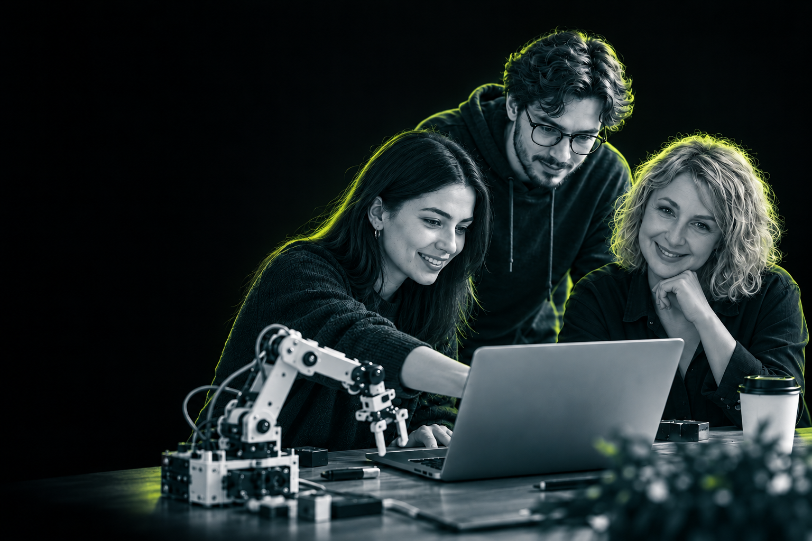

Власники освітнього
бізнесу та лідери
Якщо ви вже маєте онлайн-школу, освітню платформу, курс або команду.

EDTECH UKRAINE CONFERENCE
Всеукраїнська конференція
освітньо-технологічних інновацій
Люди. Технології. Майбутнє української освіти.
ПРО ПОДІЮ
офлайн учасників
онлайн учасників
СПІЛЬНОТА
Різна експертиза.
Спільне майбутнє освіти.
Якщо ви вже маєте онлайн-школу, освітню платформу, курс або команду.
Якщо ви шукаєте перспективні освітні проєкти для інвестування або підтримки.
Якщо ви формуєте освітню політику та стандарти цифрової освіти в Україні.
Якщо ви представляєте організацію, фонд чи асоціацію у сфері освіти та технологій.
Якщо ви керівник закладу освіти чи наукової інституції, методист, вчитель або науковець.
Якщо ви причетні до створення освітніх продуктів.
У ФОКУСІ
Штучний інтелект, персоналізація навчання та майбутнє EdTech-продуктів.
Презентація дослідження EdTech-ринку України та ключових цифр екосистеми.
Діалог між бізнесом, МОН та міжнародними донорами щодо майбутнього освіти.
Трансформація освітнього бізнесу, кризові рішення та стратегії зростання.
Роль EdTech у підвищенні кваліфікації та перенавчанні, технологічні рішення для оборони й підтримка інклюзивності.
Презентація найкращих EdTech-продуктів, відзначення лідерів галузі.
Адженда згодом.
СПІКЕРИ
Знайомтесь з експертами
«Цифрових інновацій в освіті»
Знайомство з експертами — незабаром.
Посада · Організація
LinkedInПосада · Організація
LinkedInПосада · Організація
LinkedInПосада · Організація
LinkedInПосада · Організація
LinkedInПосада · Організація
LinkedInПосада · Організація
LinkedInПосада · Організація
LinkedInПосада · Організація
LinkedInПосада · Організація
LinkedInПосада · Організація
LinkedInПосада · Організація
LinkedInПосада · Організація
LinkedInПосада · Організація
LinkedInПосада · Організація
LinkedInПосада · Організація
LinkedInEDTECH SHOWCASE
Від ідеї — до продукту,
який змінює навчання.
Виставка інноваційних освітніх продуктів та церемонія нагородження лідерів галузі.
Учасників виставки анонсуємо згодом.
РЕЄСТРАЦІЯ
27 жовтня 2026
Київ, UNIT.City + онлайн
1 500 грн
Київ, UNIT.City
1 900 грн
Київ, UNIT.City
400 грн
Пряма трансляція
Старт реєстрації та терміни дії тарифів оголосимо згодом.
ПАРТНЕРИ
Команда, яка підтримує освітян
і робить подію можливою.
Партнерів «Цифрових інновацій в освіті 2026» оголосимо згодом.
Перелік інформаційних партнерів незабаром з’явиться тут.
СТАТИ ПАРТНЕРОМ
Майданчик, де перетинаються технології, бізнес та державна стратегія розвитку освіти.
«Цифрові інновації в освіті 2026» об’єднує тих, хто визначає вектор розвитку галузі, впроваджує EdTech-рішення та впливає на трансформацію навчального процесу в країні.
Заповніть коротку форму — наш менеджер з партнерств зв’яжеться з вами, щоб обговорити формат співпраці.
FAQ
Перед участю в конференції
«Цифрові інновації в освіті».
Інструкцію для учасників після оплати опублікуємо разом зі стартом реєстрації.
Українська.
Ні, відеозапису не планується. Ми хочемо підвищити цінність живої участі та залучення.
Так, в офлайн-квиток включена welcome-кава та повноцінний кава-брейк (шведська лінія).
У разі непередбачуваної ситуації ми повертаємо:
У разі скасування події — 100% повернення.
Порядок зміни тарифу повідомимо зі стартом реєстрації.
Подія відбудеться в UNIT.City, Київ. Точну локацію в межах комплексу та маршрут до неї повідомимо ближче до конференції.
Умови паркування для учасників уточнюємо. Додамо інформацію ближче до події.
ФОТО І ВІДЕО АРХІВИ
Цифрові інновації в освіті 2025